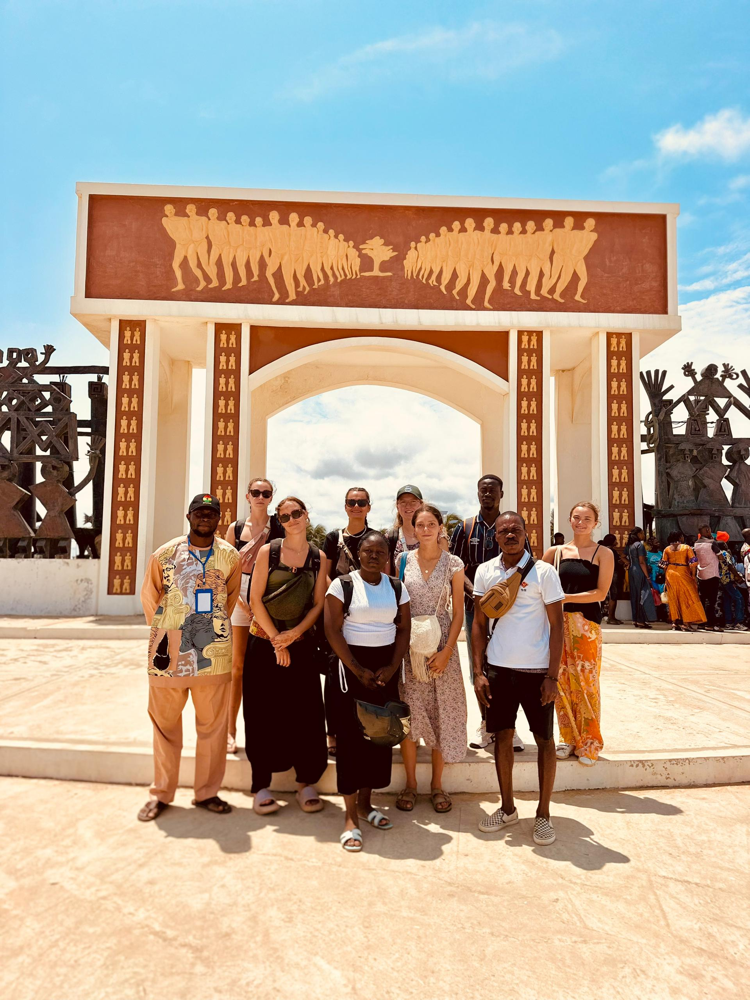
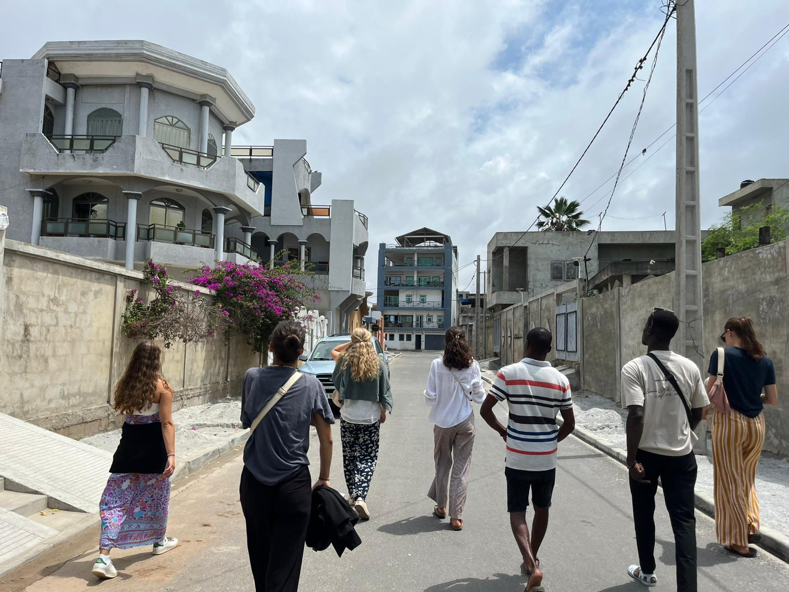

Récit du week end de l’ascension raconté by Alex, Marion et Esdras
Vendredi 15 août :
La journée du vendredi a débuté par un petit déjeuner rapide à Gbeffa avant de prendre le chemin de Ouidah. Le trajet vers la ville historique n'a pas été de tout repos, en raison de la manière de conduire des véhicules et des Zém que nous avons empruntés. Bref, heureusement que nous sommes arrivés à Ouidah, où nous avons été accueillis par notre guide pour la visite du temple des pythons. On nous a expliqué toute l'histoire entre ces reptiles et les animaux de la ville et tout le caractère sacré qui entourait cela. En tant qu'une brave personne, je n'ai pas enroulé le python au cou, mais j'ai laissé les autres le faire. Après le temple des pythons, nous avons fait le chemin de la traite négrière, qui retrace le parcours de l'esclavage des peuples d'Afrique noire vers l'Amérique, l'Europe et l'Asie. Ce parcours qui révèle un pan de notre histoire commune, ne nous a pas laissé indifférent. Cette visite laisse en moi un sentiment de compassion en la mémoire de tous nos ancêtres disparus. Une fois la visite terminée, direction le restaurant de la place '' Tchatcha'' pour déguster un mets local. La sauce pimentée que nous avons mangé nous a aidé à reprendre des forces pour la suite du voyage qui devait se passer à Cotonou. Nous arrivâmes a Cotonou vers 15h et je fus surpris par la beauté de la ville et son urbanisation. La façade maritime de la ville lui donne un plus. La soirée s'est terminée dans un bar de la ville, où nous avons esquissé quelques pas de danse au rythme de l'afrobeat.
Voilà, c'est ici que se termine ce bref résumé de ma journée qui a été assez mouvementé.
À bientôt !
Samedi 16 août :
La journée a commencé par une petite virée en boite où nous avons bien danser dans l’ambiance béninoise ! Puis vers 2h nous sommes rentrés au rbnb où nous avons retrouvé une douche avec un pommeau et une chasse d’eau ! Nous nous sommes ensuite couchés pour passer une bonne nuit à 3 dans un lit (plutôt grand quand même!!)
Après une courte nuit, nous nous sommes levés pour aller visiter un village sur l’eau du nom Ganvié. Pour cela nous avons pris une grande barque avec un guide qui nous a expliqué les différentes techniques de pêches, l’origine de ce village, le mode de vie des habitants, … Nous avons eu la chance de pouvoir visiter le logement d’une famille et nous en avons profité pour faire quelques emplettes. Ce village flottant, la « Venise Béninoise », est vraiment agencé tel un village terrestre : on y trouve une école, une église, des lieux dédiés aux marchés, des hôtels, des maisons de jeunes, le canal des amoureux, … Tous les déplacements de habitants se font en barques, et le maniement des pirogues s’apprend dès le plus jeune âge !
Vers 13h nos estomacs français commençaient à réclamer, nous nous sommes donc arrêtés partager des assiettes de frites avec des ananas et une boisson d’ici, le Youki tout en profitant d’une vue panoramique de ce village !
Nous avons ensuite continué la visite de ce village et sommes rentrés au rbnb à Cotonou pour déjeuner vers 16h ! S’en est ensuite suivi une bonne sieste 😴 et quelques parties de présidents entré mobil’
Nous avons ensuite dîné tous ensemble et sommes allés faire quelques provisions pour le lendemain et avons bu un petit verre au bar du village 🍹

Dimanche 17 août :
Réveil entre 7h et 8h pour certains, puis un bon petit-déj à 9h. La matinée a été tranquille, avec une belle balade à la plage de Fidjrossè. On a marché longtemps le long de la mer, histoire de profiter du paysage et d’admirer la ville. Retour vers 12h, juste à temps pour savourer le déjeuner déjà prêt grâce à Hermine et Julie : des spaghettis sautés aux carottes, un vrai régal 🍝😋. En dessert, de petits gâteaux achetés en revenant de la balade.
Après un petit temps de repos, départ vers 14h direction GBEFFA. Notre petit coin nous avait vraiment manqué ! Une fois arrivés, tout le monde au robinet pour remplir les seaux d’eau.
Le soir, place à un dîner royal : du Amiwo (la fameuse pâte rouge) accompagné de poulet, notre plat préféré ❤️🐓.
La journée s’est terminée dans la bonne humeur, avec un petit point d’équipe et la préparation de la nouvelle semaine.